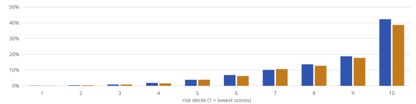
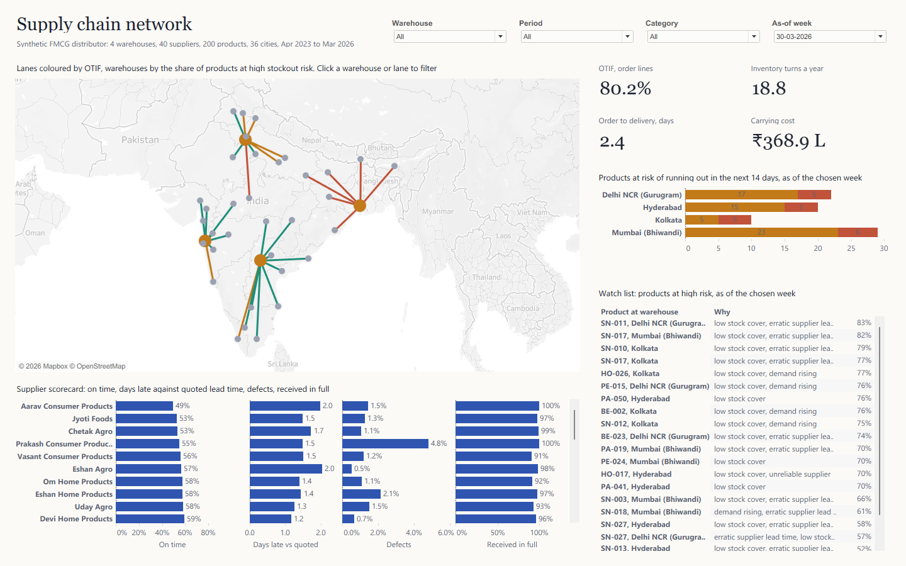
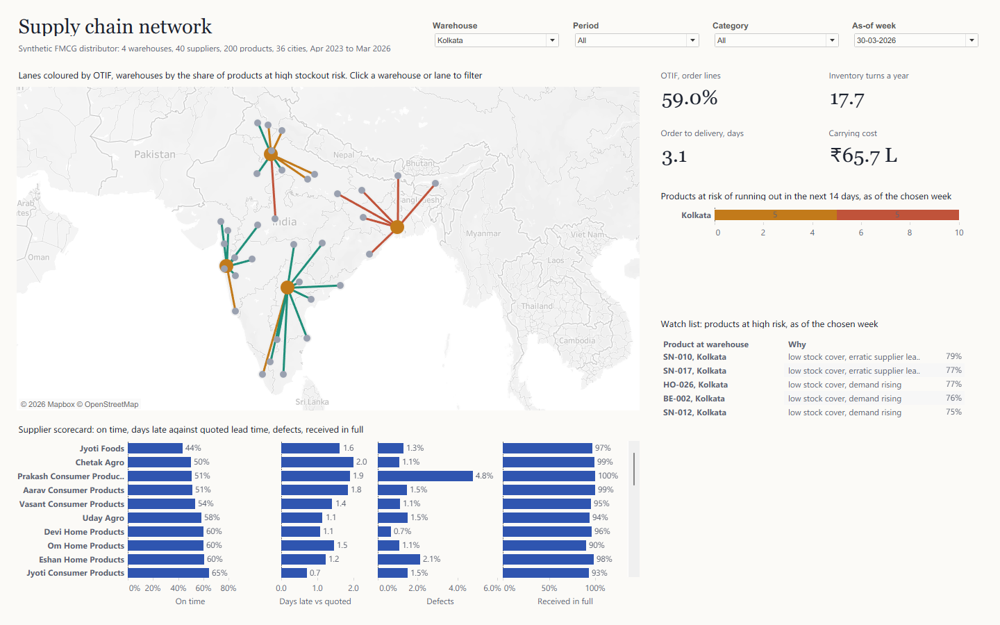
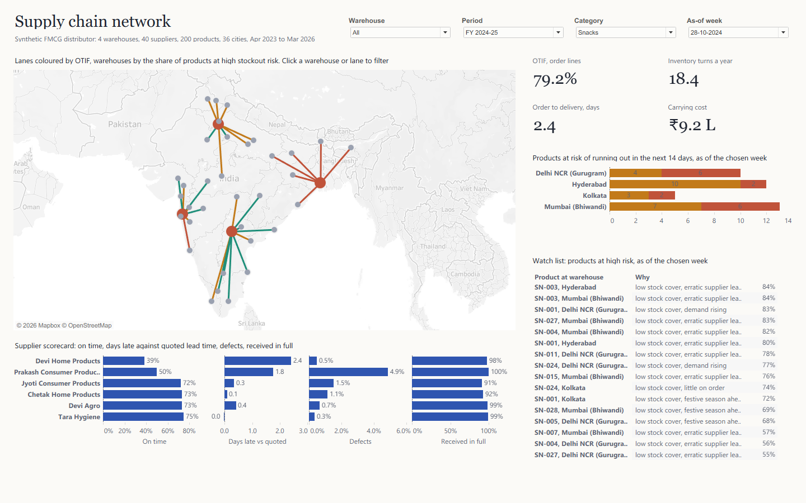

Where the network breaks
An end-to-end supply chain build: three years of a simulated FMCG distributor across India, a tested SQL model in DuckDB, a stockout risk model measured against the reorder-point rule, and a Tableau dashboard, map first, generated entirely from code.
The problem
A distributor's data sits in systems that rarely meet: sales orders and shipments in the ERP, stock in the warehouse system, purchase orders and goods receipts with procurement, and the supplier list in someone's spreadsheet. Each answers a narrow question. The questions an operations head asks cut across all of them: are we delivering on time and in full, where is the network slow, how hard is our stock working, which products are about to run out, and which suppliers are letting us down?
The brief was one dashboard that answers those questions, starts from the network itself, and filters to any warehouse with one click.
Why synthetic data. Real distribution data is commercially sensitive. Instead of a toy table, I wrote a simulator that produces the exports a supply chain analyst would actually pull, with known effects planted in it, so I can check whether the analysis finds what I know is there.
The business and the data
A fictional FMCG distributor, April 2023 to March 2026: four warehouses (Hyderabad, Mumbai at Bhiwandi, Delhi NCR at Gurugram, Kolkata) holding 200 products in five categories from 40 suppliers, serving retailers in 36 cities. The simulator (src/generate.py, seeded, so it's reproducible) runs day by day:
- Demand: retailers order twice a week, shaped by weekday, summer (beverages), the three weeks before Diwali (snacks, beverages, home and personal care) and 8% growth a year.
- Fulfilment: each warehouse ships what it has, up to its daily dispatch capacity; short lines are cut. Kolkata's capacity is tight. Transit follows road distance, and monsoon rain slows the north-east and the Konkan coast.
- Replenishment: a reorder point per product and warehouse from trailing 28-day demand, the supplier's quoted lead time and a safety stock. From September 2025 the distributor pre-builds stock for Diwali.
- Suppliers: each has its own on-time habit, defect rate and short-shipping. One snacks supplier, reliable until mid-2024, slips badly after.
It writes ten raw exports, 1,990,214 rows in all. Like real ones they need work: purchase-order dates come day first, deliveries arrive split in two, and supplier names are typed by hand, some in capitals with trailing spaces.
The pipeline
Four SQL files, each one layer: staging types the exports, parses the day-first dates and cleans the supplier names; model builds the order lines, purchase orders, daily demand and daily stock with its value and carrying cost; features builds weekly stockout snapshots and labels; marts stack everything into one table for Tableau. src/pipeline.py runs them, trains the model, runs the checks, and only then exports.
- OTIF per order line. An order of about 90 lines is complete only 16.6% of the time, because a single short line fails it. Most FMCG distributors report OTIF per line (delivered by the promised date, shipped in full), and so does this build.
- Measures that survive any filter. Turnover is stored as cost of goods and stock value summed over days, so the dashboard computes 365 × cost of goods ÷ stock-days for any warehouse, category and year without a table calculation.
- One table that also draws the map. Every lane has two rows, one at the warehouse and one at the city, so Tableau can draw it as a line; lane measures sit on the warehouse row only, so nothing counts twice.
Proving it
The pipeline refuses to export unless every check returns zero failing rows.
| Check | What it guarantees |
|---|---|
| Stock balances day to day | Yesterday's stock plus accepted receipts minus shipments equals today's, for every product in every warehouse on every day: 876,800 rows reconcile exactly. |
| Stock never goes negative | Nothing ships that isn't on the shelf. |
| Orders go to the warehouse that serves their city | The network in the data is the network on the map. |
| Purchase orders go to the product's own supplier, receipts never exceed the order | Procurement and the product master agree. |
| Stockout label matches a direct recount | The outcome the model learns is right. |
| Supplier features use only deliveries received before the snapshot | The model never sees the future. |
| The Tableau table reconciles to its sources | Lines, cost of goods, carrying cost, purchase orders and snapshots sum to the same totals as the facts. |
Plus eight more: supplier names clean; one shipment per order, dates in order; shipped quantities within the order; ABC classes split value at 80% and 95%; carrying cost at 24% a year; no outcome without 14 days of follow-up; one risk score per snapshot.
Testing the tests. Each check was run against data broken on purpose in the way it guards against (one unit added to one day's stock, a second supplier on a purchase order, a flipped stockout label, a row deleted from the Tableau table). All 15 breaks were caught.
The checks found real problems. The first reconciliation failed: a partial first week, before the data begins, was being dropped from the warehouse rows, and weeks would also have straddled financial years. Warehouse rows are now stored per day. Two consecutive builds also differed in the last digit of some money columns, because DuckDB adds floating-point numbers in parallel; those sums are now rounded to four decimals, and two builds are identical.
Dashboard matches source. The dashboard's numbers were compared with independent DuckDB queries for three views:
| View | OTIF | Days to deliver | Turns | Carrying cost | At risk (watch / high) |
|---|---|---|---|---|---|
| Everything, as of 30 Mar 2026 | 80.2% | 2.4 | 18.8 | ₹368.9 L | 60 / 21 |
| Kolkata | 59.0% | 3.1 | 17.7 | ₹65.7 L | 5 / 5 |
| Snacks, FY 2024-25, as of 28 Oct 2024 | 79.2% | 2.4 | 18.4 | ₹9.2 L | 24 / 16 |
Every value matched, as did the top watch-list rows with their risk scores and the least punctual suppliers on the scorecard.
The stockout model
The question is practical: which products will run out at which warehouse in the next 14 days? The standard answer is the reorder-point rule: a product is at risk when its stock falls to its reorder point. The model has to beat that.
- Snapshots: every product at every warehouse every Monday, 122,400 in all, with eleven inputs known that day: days of stock cover, cover including stock on order, stock against the reorder point, demand trend and variability, the supplier's on-time rate and lead-time spread over the last 180 days, days to Diwali, category, ABC class and warehouse.
- Honest validation: trained on snapshots up to September 2024 (60,000), tested from April 2025 (40,000). The test year includes the Diwali pre-build, a policy the model never saw.
| Test period | ROC AUC | Precision-recall AUC | Stockouts caught, top 23.4% |
|---|---|---|---|
| Reorder-point rule | 0.699 | 0.178 | 59.5% |
| Logistic regression | 0.815 | 0.296 | 61.6% |
| Gradient boosting (chosen) | 0.840 | 0.406 | 65.6% |
The reorder-point rule flags 23.4% of product-warehouse pairs each week. Flagging the same number, the model catches 65.6% of the stockouts that follow against the rule's 59.5%, with the same amount of attention. Gradient boosting was chosen because it beat logistic regression by more than 0.01 ROC AUC.
Calibration

Scores read as probabilities. On the dashboard, High means a 50% chance or more: in the test year, 65% of the snapshots scored High did run out within 14 days, 25% of those scored Watch (20 to 50%), and 5.5% of those scored Low.
What drives it. Stock against the reorder point carries most of the signal, followed by cover including stock on order and how erratic demand is. Days to Diwali adds nothing in the test year: once stock was pre-built, the festive weeks stopped being risky, which is the policy working. Each watch-list row shows up to two reasons, found by resetting one input at a time to a typical value and keeping those that lower the risk most.
Design decisions
- Map as navigation. The network is the mental model of an operations head; starting from it, and filtering by clicking it, beats a row of dropdowns.
- The map never filters itself. Clicking a warehouse filters every other view; the map keeps the whole network so the next click is always available.
- Colour encodes meaning. Teal good, ochre middling, rust bad, for lanes, warehouses and risk alike; grey dots are delivery cities. Bars in the scorecard stay neutral blue.
- Risk as a probability. The model is calibrated, so High means a 50% chance or more of running out, not a ranking.
- An as-of week. Stockout risk is a point in time; the week picker shows the network as it stood on any Monday, including the latest.
The dashboard
The map is the navigation. Lanes are coloured by OTIF, warehouses by the share of their products at high stockout risk. Clicking a warehouse or a lane filters everything else to that warehouse; clicking empty map clears it. The map itself never filters, so the network stays in view.

One click, and one week


What the data says
Built as code
The dashboard is generated: tableau/build_twb.py writes the data source, 23 calculated fields, the worksheets, the dashboard layout and the click action as Tableau XML, and packs it with a Hyper extract into a .twbx. The workbook XML comes out byte for byte the same on every build.
Three things only Tableau itself could settle. The click action loads only when the workbook declares the parameter-action feature at the top of the file, which Tableau's offline schema does not reveal; the first load failed until it did. A two-layer map draws a basemap only when both layers use the same latitude field. And a lane coloured by an aggregate needs a level-of-detail calculation across both of its ends, or the line fades from one colour to nothing.
python src/generate.py python src/pipeline.py python tableau/build_twb.py
Limits and next steps
- Synthetic data: the model can only learn what the simulator planted. The value shown here is the method: exact stock reconciliation, out-of-time validation and a like-for-like comparison with the reorder-point rule.
- Inbound lanes from suppliers aren't on the map; the scorecard covers suppliers.
- Short lines are cut, not back-ordered, so lost sales are not modelled as later demand.
- Next: re-set Varanasi's promised transit to three days, test a second dispatch shift at Kolkata in the simulator, and replace Prakash Consumer Products' snacks volume with a second source.